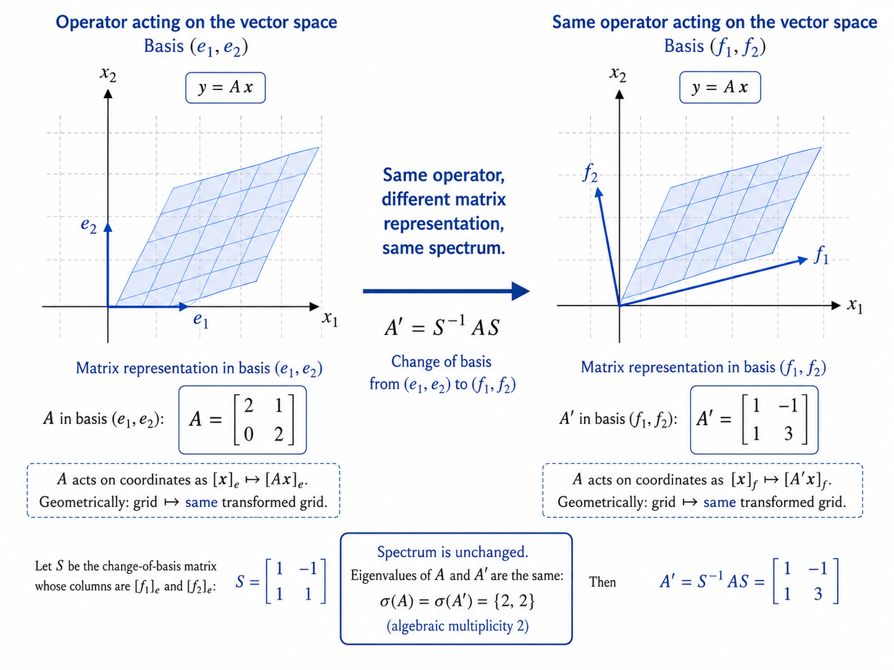
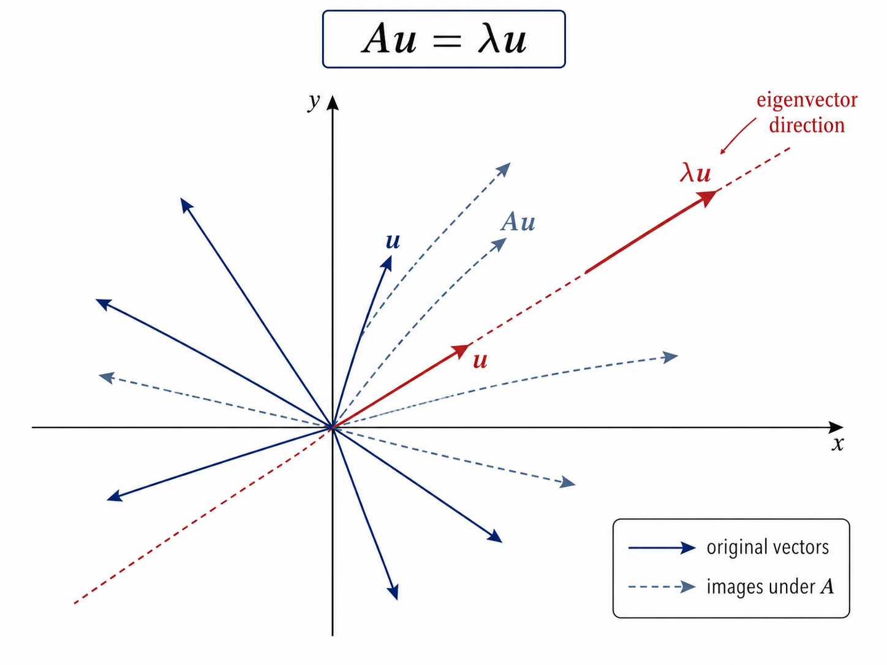
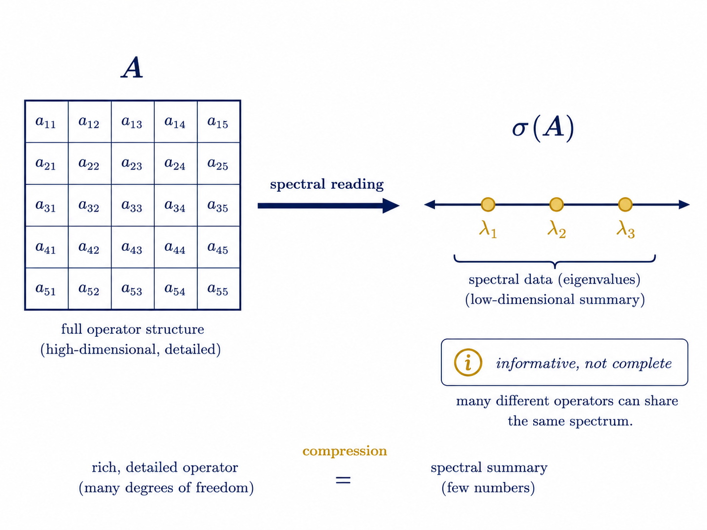

Claim boundary
Эти HTML-демонстрации являются учебной визуализацией конечномерной линейной алгебры. Они не доказывают физические утверждения и не заменяют определения из lecture-article.
Визуализации показывают первые объекты: H, A:H→H, matrix representation, Au=λu, σ(A). Темы gap, logarithmic sensitivity и finite-resolution access появляются как preview.
Главная демонстрация: Space → Operator → Matrix → Spectrum
Матрица оператора
Вектор u
Matrix
Vector
Image
Trace / determinant
Spectrum
Eigenvector check
Spectrum view
Мини-демонстрации
1. Diagonal spectrumСамый простой случай: eigenvalues равны диагональным элементам.
2. Same operator, different matrixСмена базиса: A′ = S⁻¹AS; матрица меняется, spectrum сохраняется.
3. Eigenvector detectorПоверните вектор u и найдите направления, где Au коллинеарен u.
4. Spectrum is not completeIdentity и Jordan/shear: один spectrum, разное действие.
5. Near-zero previewСлайдер ε в diag(ε,1): spectral point приближается к нулю.
6. What can be read from spectrum?Интерактивная карта: eigenvalue scales, zero/near-zero events, gap, multiplicity, trace/determinant и non-completeness.
Статические иллюстрации



Порядок изучения
| Шаг | Что увидеть | Главный вывод |
|---|---|---|
| 1 | Оператор действует на вектор и сетку. | Operator is action. |
| 2 | Матрица меняется при смене базиса. | Matrix is representation. |
| 3 | Некоторые направления сохраняются. | Eigenvectors are stable directions. |
| 4 | Eigenvalues собираются в spectrum. | Spectrum is structured reading. |
| 5 | Разные операторы могут иметь один spectrum. | Spectrum is informative, not complete. |